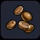
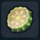
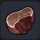
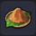
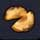

| 깜짝 토마토 | 탐스러운 빨간색으로 익은 보기 드문 거대 토마토 ■ 만복 10% 회복 ■ HP 5 회복 |
개척지 래시피 10종 작물 재배 완료 후 낮은확률로 밭에서 등장 | / | |
| 파 | 끝부분이 녹색인 하얗고 길쭉한 작물 | 꽁꽁섬 밭에서 수확 |
/ | |
| 콩 | 꼬투리에 들어 있는 녹색의 작은 열매 | 출렁출렁섬 밭에서 수확 |
/ | |
| 호박 | 단단한 녹색 껍질로 뒤덮인 식물 | 질퍽질퍽섬 밭에서 수확 |
/ | |
| 늙은 호박 | 엄청 거대하게 자란 보기 드문 호박 | 개척지 래시피 10종 작물 재배 완료 후 낮은확률로 밭에서 등장 | / | |
| 고추냉이 | 독특한 매운맛이 나는 녹색 식물 ■ 만복 10% 회복 ■ HP 5 회복 |
출렁출렁섬 논에서 수확 |
/ | |
| 실버 고추냉이 | 은색으로 빛나는 보기 드문 고추냉이 ■ 만복 10% 회복 ■ HP 5 회복 |
개척지 래시피 10종 작물 재배 완료 후 낮은확률로 밭에서 등장 | / | |
| 수수 | 찌부러뜨리면 단맛이 나는 길죽한 식물 | 주렁주렁섬 논에서 수확 |
/ | |
| 멜론 | 그물망 문양의 달콤한 과일 생으로도 먹을 수 있다 ■ 만복 5% 회복 ■ HP 7 회복 |
출렁출렁섬 밭에서 수확 |
/ | |
| 샤이니 멜론 | 눈부시게 빛나는 보기 드문 멜론 엄청나게 달콤하다 ■ 만복 7% 회복 ■ HP 7 회복 |
개척지 래시피 10종 작물 재배 완료 후 낮은확률로 밭에서 등장 | / | |
| 박가지 | 길고 불룩하게 부품 둥근 야채 | 질퍽질퍽섬 밭에서 수확 |
/ | |
| 고추 | 식재료에 곁들이면 더욱 맛있는 얼얼하게 매운 열매 | 뒹굴뒹굴섬 밭에서 수확 |
/ | |
| 파이어 고추 | 매운맛이 몇 배나 강해진 보기 드문 고추 | 개척지 래시피 10종 작물 재배 완료 후 낮은확률로 밭에서 등장 | / | |
| 감자 | 둥글고 울퉁불퉁한 식물 | 꽁꽁섬 밭에서 수확 |
/ | |
|
 |
커피콩 | 잘 볶아 우려내어 마시면 맛있는 콩 | 번쩍번쩍섬 밭에서 수확 |
/ |
| 옥수수 | 구워 먹으면 맛있는 노란색 낱알이 가득 찬 열매 | 뒹굴뒹굴섬 밭에서 수확 |
/ | |
| 딸기 | 빨갛고 달콤한 작은 열매 ■ 만복 5% 회복 ■ HP 7 회복 |
주렁주렁섬 밭에서 수확 |
/ | |
| 달달 딸기 | 달콤하기 그지없는 보기 드문 딸기 ■ 만복 5% 회복 ■ HP 7 회복 |
개척지 래시피 10종 작물 재배 완료 후 낮은확률로 밭에서 등장 | / | |
|
 |
선인장 과육 | 신선한 선인장 열매 | 기둥 선인장 파괴 | / |
| 선인장 프루트 | 그대로 먹을 수 있는 실로 두툼한 선인장 ■ 만복 7% 회복 ■ HP 7 회복 |
꽃 선인장 파괴 | / | |
| 복숭단감 | 나무로 자라는 달콤한 향의 분홍색 열매 ■ 만복 5% 회복 ■ HP 7 회복 |
질퍽질퍽섬 주렁주렁섬 |
/ | |
| 바나나 | 껍질을 벗겨 먹는 달콤한 노란색 과일 ■ 만복 7% 회복 ■ HP 7 회복 |
뒹굴뒹굴섬 오아시스 주변 |
/ | |
| 담쟁이덩굴 열매 | 담쟁이덩굴에서 채취한 식용 열매 ■ 만복 5% 회복 ■ HP 7 회복 |
뒹굴뒹굴섬 | / | |
| 빛나는 담쟁이덩굴 열매 | 담쟁이덩굴에서 채취한 보기 드문 식용 열매 ■ 만복 5% 회복 ■ HP 7 회복 |
뒹굴뒹굴섬 | / | |
| 닭고기 | 단백질이 풍부한 쫄깃쫄깃 닭고기 | 질퍽질퍽섬 닭 사냥 |
/ | |
| 양고기 | 살짝 누린내가 나지만 먹을수록 빠져드는 양고기 | 출렁출렁섬 양 사냥 |
/ | |
| 소고기 | 적당히 기름이 낀 맛있어 보이는 소고기 | 번쩍번쩍섬 소 사냥 |
/ | |
| 날고기 | 살코기와 지방의 밸런스가 좋은 마물 고기 | 토끼류 사냥 | / | |
| 드래곤 고기 | 드래곤에게서 얻은 두툼하고 촉촉한 고기 | 드래곤 사냥 | / | |
| 붕어 | 다양한 장소에서 잡히는 소형 물고기 ■ 물 온천 흙탕물 바닷물에 방류할 수 있다 ※ 텅 빈 섬, 몬조라섬 흙탕물 / 오카무르섬(상층 호수 이외) 민물에서 낚시 |
그림자 : 소 마비 해파리 사냥 |
요리가능 | |
| 연어 | 분홍색 살점이 특징적인 중형 생선 ■ 물 바닷물에 방류할 수 있다 ※ 몬조라섬 바위의 바다 / 문부르크섬 바위 이외의 바다 심해, 눈보라 지역의 민물, 바다에서 낚시 |
그림자 : 중 베이비 팬서, 머맨 사냥 |
요리가능 | |
| 도미 | 납작하고 새빨간 비늘이 있는 중형 물고기 ■ 바닷물에 방류할 수 있다 ※ 몬조라섬 바다 / 문부르크섬 바다, 바위의 심해 / 둥둥섬 바다 심해에서 낚시 |
그림자 : 중 킹 머맨 사냥 |
요리가능 | |
| 버섯 | 어둡고 좁은 곳에 자라는 균류 | 뒹굴뒹굴섬 지하 |
/ | |
| 씁쓸버섯 | 갓 딴 씁쓸버섯 | 번쩍번쩍섬 | / | |
| 하늘색 느타리 | 갓 딴 하늘색 느타리 | 뒹굴뒹굴섬 지하 최하층 |
/ | |
| 달걀 | 닭이 낳은 신선한 달걀 | 목장에서 닭이 드롭 | / | |
| 꿈틀거리는 덩굴 | 부유 식물에서 얻은 꿈툴거리는 촉수 | 으스스섬 | / | |
|
 |
썩은 고기 | 상해서 역한 냄새가 풍기는 고기 | 어둑어둑섬 | / |
| 버터 | 우유의 지방만을 모은 버터 ■ 조리시간 : 30초 ■ 만복 5% 회복 ■ HP 5 회복 |
우유 1 기름 1 |
2칸 조리대 이상 | |
|
 |
된장 | 오랜 시간을 들여 콩을 발효시킨 조미료 ■ 조리시간 : 5분 ■ 만복 5% 회복 ■ HP 5 회복 |
콩 1 | 술통 |
| 치즈 | 우유를 발효시켜 만든 진한 치즈 ■ 조리시간 : 5분 ■ 만복 8% 회복 ■ HP 5 회복 |
우유 1 | 술통 | |
| 고추냉이 절임 | 고추냉이를 잘게 잘라 절인 요리 ■ 조리시간 : 5분 ■ 만복 15% 회복 ■ HP 10 회복 마비,독 효과 무효 |
고추냉이 1 | 술통 | |
| 야채 볶음 | 야채를 구워 감칠맛을 응축시킨 요리 ■ 조리시간 : 30초 ■ 만복 20% 회복 ■ HP 10 회복 |
야채 1 | 1칸 조리대 이상 | |
| 고기 야채 볶음 | 고기와 야채를 달달 볶은 요리 ■ 조리시간 : 45초 ■ 만복 30% 회복 ■ HP 15 회복 공격력 상승 |
야채 1 고기 1 |
2칸 조리대 이상 | |
| 포토푀 | 야채와 고기를 맛있게 끓여낸 수프 요리 ■ 조리시간 : 60초 ■ 만복 60% 회복 ■ HP 15 회복 공격력 상승 |
야채 1 고기 1 깨끗한물 1(갈증 항아리) |
3칸 조리대 | |
| 스테이크 | 적당하게 구워진 고기 ■ 조리시간 : 30초 ■ 만복 30% 회복 ■ HP 5 회복 공격력 상승 |
고기 1 | 1칸 조리대 이상 | |
| 슬라임 고기 만두 | 슬라임 모양의 따끈따끈한 고기 만두 ■ 조리시간 : 45초 ■ 만복 35% 회복 ■ HP 10 회복 공격력 상승 |
밀 1 고기 1 |
2칸 조리대 이상 | |
| 버섯 햄버그 |
버섯을 올린 맛있는 햄버그 ■ 조리시간 : 45초 ■ 만복 45% 회복 ■ HP 15 회복 채굴력 상승 |
버섯 1 고기 1 |
2칸 조리대 이상 | |
| 햄버거" /> | 햄버거 |
촉촉하게 구워낸 고기를 빵 사이에 끼운 것 ■ 조리시간 : 60초 ■ 만복 65% 회복 ■ HP 15 회복 공격력 상승 |
밀 1 고기 1 야채 1 |
3칸 조리대 |
| 생선구이 | 노릇노릇하게 구워진 생선 ■ 조리시간 : 30초 ■ 만복 25% 회복 ■ HP 5 회복 방어력 상승 |
생선 1 | 1칸 조리대 이상 | |
| 해산물 샐러드 | 해산물을 잔뜩 써서 만든 샐러드 ■ 조리시간 : 45초 ■ 만복 30% 회복 ■ HP 20 회복 방어력 상승 |
생선 1 야채 1 |
2칸 조리대 이상 | |
| 해물탕 | 해산물을 듬뿍 써서 만든 탕 요리 ■ 조리시간 : 60초 ■ 만복 55% 회복 ■ HP 25 회복 방어력 상승 |
생선 1 야채 1 깨끗한물 1(갈증 항아리) |
3칸 조리대 | |
| 해산물 덮밥 | 해산물을 잔뜩 올린 덮밥 ■ 조리시간 : 45초 ■ 만복 45% 회복 ■ HP 15 회복 방어력 상승 |
생선 1 밀 1 |
2칸 조리대 이상 | |
| 빵 | 곡물 가루를 반죽해 둥글게 구운 소박한 빵 ■ 조리시간 : 30초 ■ 만복 30% 회복 ■ HP 5 회복 |
밀 1 | 1칸 조리대 이상 | |
| 파스타 | 야채를 볶아 버무린 파스타 ■ 조리시간 : 45초 ■ 만복 40% 회복 ■ HP 10 회복 |
밀 1 야채 1 |
2칸 조리대 이상 | |
| 조각과일 | 갓 딴 과일을 잘라 만든 디저트 ■ 조리시간 : 15초 ■ 만복 10% 회복 ■ HP 15 회복 |
선인장 프루트 1 | 1칸 조리대 이상 | |
| 구운 버섯 | 버섯을 꼬챙이에 꿰어 향긋하게 구워낸 요리 ■ 조리시간 : 30초 ■ 만복 20% 회복 ■ HP 10 회복 채굴력 상승 |
버섯 1 | 1칸 조리대 이상 | |
| 과일 파이 | 과일을 잔뜩 넣은 파이 ■ 조리시간 : 45초 ■ 만복 25% 회복 ■ HP 15 회복 |
과일 1 밀 1 |
2칸 조리대 이상 | |
| 구운 다시마 | 그저 굽기만 한 다시마 약간 짭짤하다 ■ 조리시간 : 15초 ■ 만복 15% 회복 ■ HP 10 회복 |
다시마 1 | 1칸 조리대 이상 | |
| 분홍 조개 구이 | 분홍 조개를 노릇노릇하게 구운 촉촉한 음식 ■ 조리시간 : 15초 ■ 만복 20% 회복 ■ HP 10 회복 |
분홍 조개 1 | 1칸 조리대 이상 | |
| 선인장 스테이크 | 두툼한 선인장을 센불로 구운 요리 ■ 조리시간 : 30초 ■ 만복 20% 회복 ■ HP 10 회복 |
선인장 과육 1 | 1칸 조리대 이상 | |
| 베이크드 포테이토 | 포슬포슬한 감자 통구이 ■ 조리시간 : 30초 ■ 만복 25% 회복 ■ HP 10 회복 |
감자 1 | 1칸 조리대 이상 | |
| 구운 옥수수 | 달콤한 향기가 나는 옥수수 통구이 ■ 조리시간 : 25초 ■ 만복 10% 회복 ■ HP 30 회복 |
옥수수 1 | 1칸 조리대 이상 | |
| 풋콩 | 풋콩을 꼬투리째 삶은 기본 안주 ■ 조리시간 : 15초 ■ 만복 20% 회복 ■ HP 10 회복 |
콩 1 | 1칸 조리대 이상 | |
| 달걀 프라이 | 달걀을 터뜨리지 않고 둥글게 부친 요리 ■ 조리시간 : 30초 ■ 만복 20% 회복 ■ HP 10 회복 공격력 상승 |
달걀 1 | 1칸 조리대 이상 | |
| 사탕 | 아주 달콤한 사탕 ■ 조리시간 : 15초 ■ 만복 5% 회복 ■ HP 15 회복 |
수수 1 | 1칸 조리대 이상 | |
|
 |
구운 복숭단감 | 정성껏 구운 복숭단감 ■ 조리시간 : 15초 ■ 만복 20% 회복 ■ HP 10 회복 공격력 상승 |
복숭단감 1 | 1칸 조리대 이상 |
| 감자튀김 | 잘게 썬 감자를 기름으로 튀긴 요리 ■ 조리시간 : 30초 ■ 만복 25% 회복 ■ HP 10 회복 |
감자 1 기름 1 |
2칸 조리대 이상 | |
| 알록달록 샐러드 | 갓 딴 야채로 만든 샐러드 ■ 조리시간 : 45초 ■ 만복 30% 회복 ■ HP 25 회복 |
양배추 1 토마토 1 |
2칸 조리대 이상 | |
| 펌프킨 수프 | 포슬포슬한 호박으로 만든 달콤한 수프 ■ 조리시간 : 45초 ■ 만복 25% 회복 ■ HP 20 회복 |
호박 1 우유 1 |
2칸 조리대 이상 | |
| 호박파이 | 호박 페이스트를 넣은 파이 ■ 조리시간 : 45초 ■ 만복 35% 회복 ■ HP 20 회복 |
호박 1 밀 1 |
2칸 조리대 이상 | |
| 두유 | 콩을 졸여서 으깨어 만든 음료 ■ 조리시간 : 30초 ■ 만복 5% 회복 ■ HP 20 회복 |
콩 1 깨끗한물 1(갈증 항아리) |
2칸 조리대 이상 | |
| 빅 스테이크 | 놀라우리만치 두툼한 육즙 넘치는 스테이크 ■ 조리시간 : 45초 ■ 만복 65% 회복 ■ HP 15 회복 공격력 상승 |
드래곤 고기 1 소고기 1 |
2칸 조리대 이상 | |
| 커틀릿 | 기름으로 튀겨낸 촉촉한 고기 요리 ■ 조리시간 : 45초 ■ 만복 35% 회복 ■ HP 10 회복 공격력 상승 |
고기 1 기름 1 |
2칸 조리대 이상 | |
| 용암 스테이크 | 몸 속에서 힘이 솟아나는 아주 매운 스테이크 ■ 조리시간 : 45초 ■ 만복 40% 회복 ■ HP 10 회복 공격력 상승 |
고기 1 고추 1 |
2칸 조리대 이상 | |
| 삶은 게 | 게의 집게살을 껍질째 삶은 요리 ■ 조리시간 : 15초 ■ 만복 20% 회복 ■ HP 10 회복 방어력 상승 |
게의 집게발 1 | 1칸 조리대 이상 | |
| 생선튀김 | 기름으로 튀겨낸 바삭한 생선 요리 ■ 조리시간 : 45초 ■ 만복 30% 회복 ■ HP 10 회복 방어력 상승 |
생선 1 기름 1 |
2칸 조리대 이상 | |
| 피자 | 평평한 반죽에 치즈와 재료를 올려 구운 요리 ■ 조리시간 : 45초 ■ 만복 55% 회복 ■ HP 20 회복 |
밀 1 치즈 1 |
2칸 조리대 이상 | |
| 버터 토스트 | 구운 빵에 버터를 바른 요리 ■ 조리시간 : 45초 ■ 만복 30% 회복 ■ HP 15 회복 |
밀 1 버터 1 |
2칸 조리대 이상 | |
| 핫케이크 | 밀을 사용해 노릇노릇하게 구운 팬케이크 ■ 조리시간 : 45초 ■ 만복 40% 회복 ■ HP 15 회복 |
밀 1 달걀 1 |
2칸 조리대 이상 | |
| 우유죽 | 우유로 쑨 죽 ■ 조리시간 : 45초 ■ 만복 30% 회복 ■ HP 10 회복 |
밀 1 우유 1 |
2칸 조리대 이상 | |
| 버섯 두유 스프 | 버섯의 풍미가 가득한 두유 수프 ■ 조리시간 : 45초 ■ 만복 30% 회복 ■ HP 15 회복 채굴력 상승 |
버섯 1 두유 1 |
2칸 조리대 이상 | |
| 온천계란 | 달걀을 뜨거운 물로 빠르게 삶아낸 요리 ■ 조리시간 : 30초 ■ 만복 15% 회복 ■ HP 5 회복 공격력 상승 |
달걀 1 온천물 1(갈증 항아리) |
2칸 조리대 이상 | |
| 쿠키 | 바삭바삭하게 구운 슬라임 모양의 과자 ■ 조리시간 : 30초 ■ 만복 15% 회복 ■ HP 5 회복 |
밀 1 수수 1 |
2칸 조리대 이상 | |
| 아이스크림 | 설탕과 버터를 차게 해서 섞은 달콤한 과자 ■ 조리시간 : 30초 ■ 만복 10% 회복 ■ HP 15 회복 |
눈블럭 1 우유 1 |
2칸 조리대 이상 | |
| 빙수 | 얼음을 부숴 달콤한 꿀을 뿌린 차가운 과자 ■ 조리시간 : 30초 ■ 만복 310% 회복 ■ HP 20 회복 |
과일 1 얼음블럭 1 |
2칸 조리대 이상 | |
| 게살 크로켓 | 게살이 들어 있는 바삭바삭한 크로켓 ■ 조리시간 : 60초 ■ 만복 45% 회복 ■ HP 20 회복 방어력 상승 |
밀 1 게의 집게발 1 우유 1 |
3칸 조리대 | |
| 포테이토 샐러드 | 감자를 쪄 잘게 썬 야채와 섞은 요리 ■ 조리시간 : 45초 ■ 만복 30% 회복 ■ HP 25 회복 |
감자 1 박가지 1 달걀 1 |
3칸 조리대 | |
| 치즈버거 | 고기와 치즈의 하모니가 끝내주는 햄버거 ■ 조리시간 : 60초 ■ 만복 75% 회복 ■ HP 20 회복 공격력 상승 |
고기 1 밀 1 치즈 1 |
3칸 조리대 | |
| 그득그득고기 | 고기를 산더미처럼 올린 요리 ■ 조리시간 : 40초 ■ 만복 100% 회복 ■ HP 10 회복 공격력 상승 |
소고기 1 양고기 1 닭고기 1 |
3칸 조리대 |